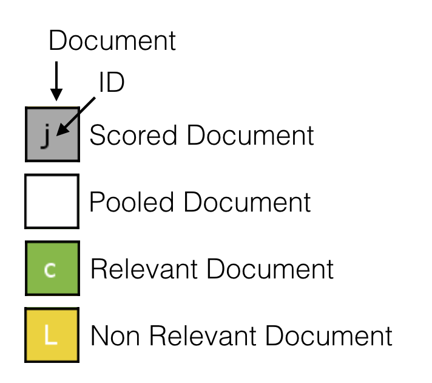

The Project
This project aims to visualize the pooling strategies developed for the pooling method.
Pooling
Pooling Strategies
The visualized pooling strategies are:
- Take@N
- RBPBasedA@N&p
- RBPBasedB@N&p
- RBPBasedC@N&p
Following the legend of the animations

Take@N
This strategy is the most commonly adopted in practice if a fixed pool size is required (e.g., due to budget constraints) and is based on the rank at which documents have been retrieved. It starts assigning to every retrieved document $d$ the highest rank $\rho$ to which $d$ has been retrieved by $R_p$, then it continues taking the first $N$ documents with the highest $\rho$ and pools them. The main drawback of this strategy with respect to $Depth@k$ is that it does not guarantee fairness among all the pooled runs. In $Depth@k$ all the runs contribute equally to the pool with their first $k$ documents, here some runs can get more judged documents than others.

RBPBasedA@N&p
To every retrieved $d$ in every pooled run $r \in R_p$ is associated a score equal to the RBP residual, which is a function of the rank $\rho$ to which $d$ has been retrieved in $r$ and a parameter $p$, fixed in advance:
$c_{r,d} = (1-p)p^{\rho(r,d)-1}$
Then, a weight is assigned to every retrieved $d$, which is calculated by summing up all the scores obtained in the pooled runs $R_p$, as follows:
$w_d = \sum_{r \in R_p}{c_{r,d}}$
Finally, the first $N$ documents with highest weight are included in the pool. This strategy rewards documents that have been retrieved by multiple runs at high ranks, but it has the drawback of leaving runs' residuals free (unconstrained), which may be undesirable.

RBPBasedB@N&p
Like strategy $A$, but the weighting function is calculated by multiplying the RBP gain-based score with the current residual of $r$ from which $d$ comes:
$w_d = \sum_{r \in R_p}{c_{r,d} \cdot e_r}$
This pooling strategy, with respect to the others, adapts the weights $w_d$ at every pooled document, due to the inclusion in the weighing schema of the residuals, which are in function of the current set of judged documents. This strategy is characterized by $N$ sequential re-weighting stages in which at each stage the document with the highest $w_d$ is pooled. It is worth mentioning that the re-weighting is independent of the actual judgment of the document.

RBPBasedC@N&p
Like strategy $B$, but the weighting function is calculated taking into account also the current RBP score of the run $r$:
$w_d = \sum_{r \in R_p}{c_{r,d} \cdot e_r \cdot (b_r + e_r/2)^3}$
This strategy rewards the runs that have retrieved more relevant documents.